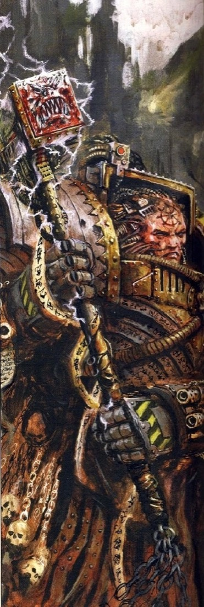
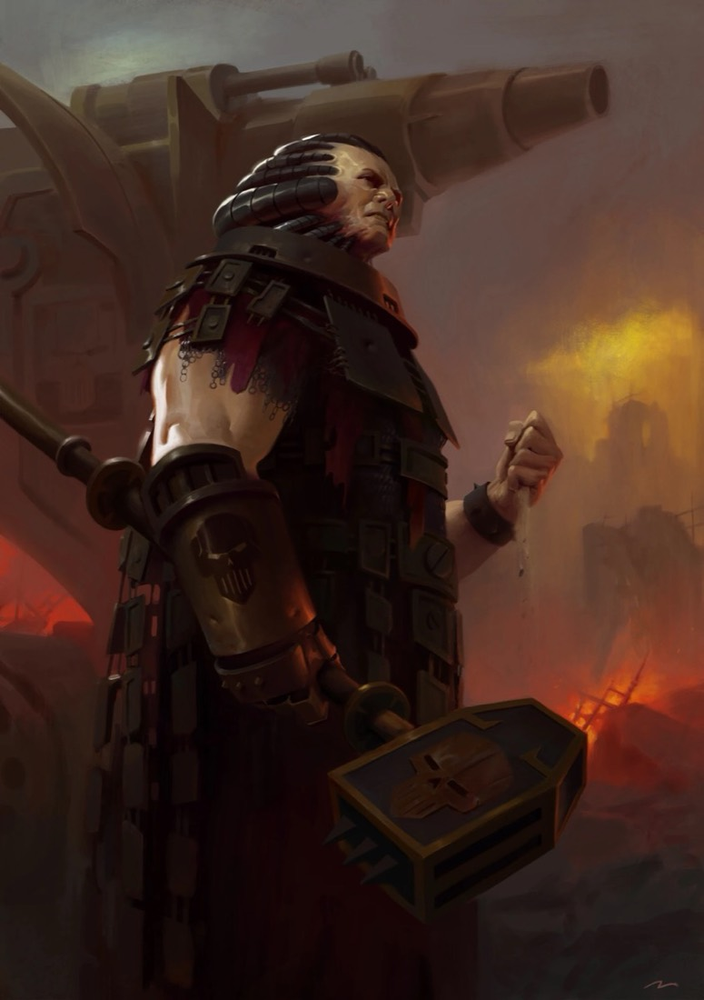

Perturabo
| Perturabo | |
|---|---|
| Primarch of the IV Legion | |
 The Daemon Primarch of the Iron Warriors, from a plate in the Logos Historica collection Artwork © Games Workshop | |
| Primarch of the Iron Warriors | |
| Tenure | 849.M30 – present |
| Daemon Primarch of Chaos Undivided | |
| Seat | Medrengard, in the Eye of Terror |
| Also known as | The Lord of Iron; the Hammer of Olympia |
| Allegiance | Emperor of Mankind until 005.M31; thereafter Horus and Chaos (Undivided) |
| Legion | |
| Homeworld | Olympia; since the Heresy, the daemon world of Medrengard |
| Created | Beneath the Himalazian mountains, Terra, c. 792.M30 |
| Discovered | 849.M30, on Olympia |
| Status | Alive; commanding the Iron Warriors from Medrengard in the Eye of Terror |
| Relatives |
|
| Wargear | The Logos; Forgebreaker (taken from Ferrus Manus); wrist-mounted combi-bolter; the command tank Tormentor |
| Known for | Siegecraft; the decimation of his Legion; the Infinite Citadel |
Perturabo, called the Lord of Iron, was the Primarch of the IV Legion of the Space Marine Legions, the Iron Warriors. Raised in the court of a tyrant on the city-state world of Olympia, he was a prodigy of siegecraft, engineering and philosophy and the most gifted fortress-builder of his generation of primarchs. He found the Great Crusade a burden rather than a calling, and was kept in the background by the praise given to his more glamorous brothers. His loathing of Rogal Dorn, who resembled him most, was the bitterest of any rivalry among the primarchs.[1][2]
In the Horus Heresy he sided with Horus after the Legions' bitterness against the Emperor had hardened into rebellion. His Iron Warriors took part in the second wave on Isstvan V, and he brought Dorn's Imperial Fists low at Hydra Cordatus. Led by Fulgrim into the Eye of Terror, he came close to killing the Phoenician at the moment of his ascension to daemonhood and was struck down for it.[3][4]
After the war he withdrew to Medrengard, a daemon world in the Eye, and became a Daemon Primarch of Chaos Undivided. In the Era Indomitus, after the opening of the Great Rift, he returned to open war for the first time in many millennia, with a plan called the Infinite Citadel to turn the Imperium into a chain of fortresses that would creep toward Terra.[5]
Early life
[edit]Olympia
[edit]The capsule of the infant Perturabo fell on Olympia, a civilised world of warring city-states. The best Imperial account was collected from Olympian witnesses many years after the event and is considered unreliable, being coloured by the intrigues of that world. It records that guards of the Tyrant of the city of Lochos found him in the rocky wilds outside the walls. They had been sent to investigate tales of a strange boy who wandered between outlying settlements and outcast communities, earning his keep as a mercenary and as an artisan of great skill, never staying long in one place.[1]
The Tyrant, Dammekos, a shrewd and cunning man, tested the child. He watched him defeat warriors twice his size and solve puzzles that baffled the court scholars, and offered him a place. The two struck a bargain: loyalty and service on one side, protection and the best military training and learning that Lochos could give on the other. Some later accounts present a prodigy who spent his whole youth in solitary study and training. Others speak of a cold and devious child who never trusted the Olympians and who gave no affection in return for the Tyrant's. He learned from the city-states' constant wars the arts of the siege.[1]
On the night he climbed the cliffs below Lochos, he looked at the heavens and saw a nebulous stellar storm, which the guards with him could not see. For the rest of his life it was always in his sight, in whatever sky he saw, and seemed to judge and watch him. He felt it as a scrutiny that made him brooding and unwilling to trust. Two centuries later he would enter it and give it a name: the Eye of Terror.[1]
The Emperor
[edit]The Emperor came to Olympia in 849.M30. By Imperial accounts Perturabo accepted him at once, unlike several of his brothers. He had reasoned, in the abstract, that he was an artificial being and expected his maker to appear. Dammekos is thought to have been content to make the world an Imperial satrapy, and the price of releasing the boy was small. Perturabo was taken to Terra, where he studied with the Emperor and met some of his brothers. With Magnus the Red, who shared his love of learning, he spent months searching for the buried knowledge of Terra's ancient past. Of all his brothers, Magnus was the one with whom he got on best.[1]
He climbed the Astartes Tower of the Imperial Palace to swear his Oath of Moment, took command of the IV Legion, and renamed it the Iron Warriors. As lord of Olympia, he displaced the Tyrant who had raised him. He began to recruit the Legion's new Aspirants from the finest Olympian candidates.[1]
Great Crusade
[edit]The decimation
[edit]Perturabo took over a Legion of about thirty-five thousand Legionaries, with perhaps half as many again in small garrisons across the Imperium. He reviewed its war record and doctrine, compared them with those of the other Legions, and found them wanting. His response was decimation. One Legionary in ten, chosen by lot, was put to death without honour by his own comrades with his bare hands. "War is unequivocal, uncaring, unforgiving and blind. Blind also will be the selection of those who will pay the blood price for the greater failure of your record." Some at the Imperial Court protested that a madman had been given absolute power over a Legion. Perturabo made the Iron Warriors a tool of absolute discipline, and drove a wedge between them and the other Legions that was never closed.[2]
The Iron Warriors
[edit]
The Iron Warriors specialised in siege warfare and in the grinding open battles that surround it. They accepted attrition as the price of victory and are estimated to have suffered the highest casualties of any Legion in the Great Crusade, though the Legion routinely absorbed them without any lasting loss of strength. Perturabo's conquests were innumerable and unremarked. He left shattered worlds behind him, and the Legion drew a reflection of his own character: suspicion, distrust of others and a callous indifference to life, alongside iron determination.[2]
The Iron Warriors went unthanked. They did the hardest tasks of the Crusade for no honour, and Perturabo thought of the Crusade as a duty rather than a cause. The resentment of an unrewarded Legion fed his own. Many chroniclers also speak of a rebellion in Olympia in the Crusade's late years, which he put down with a campaign that, by most accounts, ended in the destruction of the world's population.[2]
Dorn
[edit]The enmity between Perturabo and Rogal Dorn has been much studied. They were alike: both reserved to the point of silence, both obdurate, both artists of siege, both prizing endurance. The similarity bred discord, not understanding. Perturabo was a pragmatist who accepted horrific casualties as a plain cost of victory. Dorn was an idealist who paid such a price only from necessity. The roots of the dispute, which may have been present from their first meeting, are known only to the two. It brought both their Legions close to destruction.[2]
Horus Heresy
[edit]Isstvan V
[edit]Perturabo went to the Isstvan System after the pacification of Olympia in 004.M31. He met Horus's allies in the Word Bearers' flagship before the second wave landed, and when the second wave turned on the loyalists, his Legion's ships destroyed the loyalist dropships and loosed the atomic strike on the Salamanders' position. The Iron Hands' hammer Forgebreaker, taken from the dead Ferrus Manus, was given to him by Horus as a token of his new allegiance. Perturabo built, at the Night Lords' request, a maze for the imprisoned Vulkan, in imitation of his own private sanctum.[3][2]
Hydra Cordatus
[edit]In 007.M31 the Iron Warriors struck at the Imperial Fists at Hydra Cordatus, a world that Dorn's Legion had recently brought into the Imperium. They bombarded the valley that held the Cadmean Citadel but left the citadel untouched, to show the Imperial Fists that they could. The garrison held for almost three months. When the walls broke, the Lord of Iron led the final assault himself and killed more than thirty Imperial Fists in a few minutes. The surviving garrison and refugees were slaughtered or enslaved, and the planet was reduced to a desert.[3]
Angel Exterminatus
[edit]After Hydra Cordatus, Fulgrim arrived to say that he had something wondrous to show. Perturabo suspected a plan for the Mechanicum on Mars. Fulgrim, who had sworn to the Warmaster and was visibly changed, asked him to go into the Eye of Terror with their joint fleet, guided by an Aeldari seer. As the fleet came to the outskirts of the storm, Perturabo for the first time saw that others could see what he saw. Looking at the astrogation charts, he marked the vast singularity at its heart with the name Cygnus X-1. He had named the Eye in his youth.[4]
The destination was Iydris, one of the Crone Worlds of the lost Aeldari empire, which survived at the heart of the storm. The Iron Warriors bombarded the citadel of Amon ny-shak Kaelis, which guarded the Sepulchre of Isha's Doom, the prison-tomb of the "Angel Exterminatus". Perturabo, who distrusted an undefended objective, dug in behind layers of defence to protect the line of retreat, and led the way into the citadel with Fulgrim.[4]
In the Sepulchre, Perturabo discovered what Fulgrim wanted. The Phoenician was shedding light, no longer entirely a primarch, and was approaching a shaft at the centre of the chamber. Perturabo had come prepared. He carried the maugetar stone, with which he meant to turn the rite against his brother. He knew that Fulgrim no longer wanted to be an angel but a god, and he told him that Mankind had outgrown such beings. Fulgrim threw him aside. As Fulgrim achieved apotheosis, Perturabo rose and cast the stone into the shaft. In the confusion that followed, bolter fire broke out in the chamber. A small band of loyalists from the strike cruiser Sisypheum, survivors of Isstvan V who had trailed the Traitors into the Eye, took advantage of it. The Daemon Fulgrim held the field, and Perturabo left the Eye, having lost the last of his brothers whom he had counted as a friend.[4]
Siege of Terra
[edit]After the Eye, the Iron Warriors acted as full servants of Chaos. They conquered Imperial planets and demanded tithes for the Warmaster's war. One part of the Legion held Olympia and the neighbouring systems as an Empire of Iron, while another went with Perturabo to Terra. At the Siege of Terra he was the Warmaster's siegebreaker, and opposite him was Dorn. The accounts of the siege record a long, terrible attrition around the outer defences, in which the Iron Warriors broke the outer works, took the toll in human life that they accepted, and still could not carry the Inner Palace. At a council of the Traitor commanders, Fulgrim mocked him for refusing the pleasures of Chaos. The Emperor killed Horus before the question whether Dorn's defences could be defeated was resolved.[6][2]

After the Heresy
[edit]The Iron Cage
[edit]After the Siege the Iron Warriors fled into the Eye of Terror. Perturabo took revenge on Dorn's Legion at Sebastus IV, in about 021.M31,[a] where he built the Eternal Fortress, an enormous complex of bunkers, minefields, trenches and tank traps in the shape of an eight-pointed Star of Chaos, as a trap. Dorn had declared publicly that he would dig Perturabo out of his hole and bring him back to Terra in an iron cage. He sent four companies of Imperial Fists, expecting an honourable battle. Perturabo isolated them from their orbital support, divided them and destroyed them piecemeal. The fortress was a decoy, with no keep at its centre, only an open killing ground. By the sixth day the Imperial Fists were fighting one by one, using the bodies of their dead brothers for cover.[2]
Daemonhood and Medrengard
[edit]Perturabo became a Daemon Primarch of Chaos Undivided, in the favour of all the powers rather than one, and made the daemon world of Medrengard his seat. The details of his ascension are disputed. Earlier Imperial summaries described him as a Daemon Prince raised by the will of the Ruinous Powers. The later accounts of the Ordo Malleus, drawn from reports out of the Eye, hold that he took the powers of the Warp deliberately and on his own terms: he surrendered captured loyalist gene-seed to the gods and made an alliance with Nurgle. He is reported to have conquered a machine world, Toil, where the engines of the Mechanicum were twisted into daemon engines to supply his war.[5]
Infinite Citadel
[edit]In the Era Indomitus, Perturabo launched a plan he called the Infinite Citadel. After the fall of Cadia and the opening of the Great Rift, he sent scores of warbands across the Segmentum Obscurus in the period called the Noctis Aeterna, ranging from pirates and cultists to Grand Companies with Chaos Knights and Traitor Titans. The strikes against the Imperial retreat from Cadia appeared to be mere spite. They were the first moves in a plan that Perturabo had conceived over thousands of years.[5]
The scheme is a siege on a galactic scale. Entire worlds are turned into brutalist fortresses, stripped of resources, and linked in an expanding front. Where the Imperium resists, the Iron Warriors dig in, and the defenders' counter-attacks break against the walls. The casualties please the gods and thin the veil between realspace and the Warp, so that, in time, the Daemon Primarch can walk onto Imperial soil at will and kill the Emperor in person. The campaign began with the assault on the remaining fortified systems of the Cadian Gate. It marked the first time in many millennia that Perturabo himself returned to the battlefield.[5]
Character and abilities
[edit]Few called Perturabo a friend. He was reserved to the point of insult, suspicious even of his kin, and kept his own thoughts. He was patient, direct and unforgiving. His word, it was said, was as unbreakable as iron. Fellow primarchs forgot that his mind was as advanced as theirs. He lacked the warp-lore of Magnus and the generalship of Horus, but being underestimated was one of his weapons. He debated the finer points of engineering with the highest Adepts of the Mechanicum, and he was a craftsman, who kept in his sanctum a collection of reconstructed stonework, murals, painted works and hundreds of rolled drawings of his own buildings.[2]
He once said to Fulgrim: "You don't know the things I dream. No one does, no one ever cared enough to find out." The remark is cited by the Remembrancer Order as the most direct statement of his character to survive.[4]
Wargear
[edit]His armour, the Logos, was a unique artificer suit in the Cataphractii pattern, designed by himself, with heavy layered ceramite that would have suited a tank. It held command and control systems that linked him to all of his forces, a teleport homer, a cortex controller for automata, a nuncio-vox and a cognis signum. His principal weapon was Forgebreaker, the great hammer forged by Fulgrim for Ferrus Manus beneath Mount Narodnya, which Horus presented to him at Isstvan V. He wore a wrist-mounted combi-bolter and rode to battle in a converted Shadowsword super-heavy tank, the Tormentor.[2][4]
Timeline
[edit]| Date | Event |
|---|---|
| c. 792.M30 | The infant primarch is scattered from Terra and falls on Olympia, where he is adopted by the Tyrant Dammekos of Lochos. |
| 849.M30 | The Emperor comes to Olympia. Perturabo swears his oath in the Astartes Tower, takes command of the IV Legion and renames it the Iron Warriors; he orders the Legion's decimation. |
| 849.M30 | First compliance under his command, the Fall of the Black Judges. |
| Mid-M30 | Joint compliances of the Araaki Spiral and against WAAAGH! Mashogg alongside the Imperial Fists; the rivalry with Rogal Dorn hardens. |
| 000.M31 | Present at the Triumph of Ullanor; resents the elevation of Horus as Warmaster. |
| 004.M31 | Crushes the revolt on Olympia after the death of its Satrap, with great slaughter. |
| 006.M31 | Leads the Iron Warriors in the Traitor second wave at the Drop Site Massacre on Isstvan V. |
| 007.M31 | Humbles the Imperial Fists at Hydra Cordatus, then follows Fulgrim into the Eye of Terror to Iydris. |
| 010–012.M31 | The Iron Warriors attack the muster world of Tallarn in the Battle of Tallarn. |
| c. 012–013.M31 | Ordered by Horus to bring Angron to the Traitor muster at Ullanor. |
| 014.M31 | Directs the Traitor siegeworks at the Siege of Terra; flees into the Eye after the death of Horus. |
| c. 021.M31[a] | Builds the Eternal Fortress on Sebastus IV and traps the Imperial Fists in the Iron Cage. |
| After 014.M31 | Takes the daemon world Medrengard as his seat and becomes a Daemon Primarch of Chaos Undivided. |
| Early M42 | Opens the Infinite Citadel campaign across the Segmentum Obscurus after the Fall of Cadia. |
See also
[edit]Notes
[edit]References
[edit]- ^ a b c d e f Eye of Terror: Reign of Iron (10th Edition), pp. 30-31, 54-59, 60-73, 76-77. Games Workshop. McNeill, Graham. Fulgrim (novel). Black Library, pp. 126, 327, 355, 402, 410.
- ^ a b c d e f g h i j Lee, Mike. Fallen Angels (novel). Black Library, pg. 315. Dembski-Bowden, Aaron. The First Heretic (novel). Black Library, pp. 319-320, 370, 374.
- ^ a b c McNeill, Graham. Angel Exterminatus (novel). Black Library. French, John. The Solar War (novel). Black Library, Limited Edition Artwork.
- ^ a b c d e f Codex: Chaos Space Marines (6th Edition), pg. 22. Games Workshop. Codex: Chaos (2nd Edition), pg. 16. Games Workshop.
- ^ a b c d Bligh, Alan. The Horus Heresy Book Three: Extermination (Forge World Series). Black Library, pp. 107-118, 252-253. Horus Heresy: Collected Visions (Art Book), pp. 70, 188, 226, 286, 330, 334, 342-343, 352.
- ^ Index Astartes I, "Bitter and Twisted - The Iron Warriors Space Marine Legion" pp. 32-36. [https://www.warhammer-community.com/en-gb/articles/krrfctul/perturabos-grand-plan-revealed/ Warhammer Community - Perturabo's grand plan revealed].